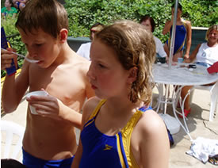
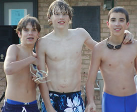

RentalsThe Virginia Hills Club's pool is available for rentals. Organizations which would like to bring groups, such as daycare classes, into the pool on either a regular or one-time basis during normal pool hours or in the mornings prior to general openings, should send an e-mail to info@vahillspool.org stating the dates and times in which you are interested.
PartiesThe Virginia Hills Club welcomes the opportunity for members to host birthday parties, team parties and other similar events, during regular pool hours or by special arrangements at other times. Arrangements must be made in advance by contacting the Club at info@vahillspool.org. Use of picnic tables, the patio lounge, and access to the pool and other facilities are included. Pool members can participate in such parties at no charge. Hosts should arrange for non-members (adults and children) to attend using guest passes. (Members receive 10 guest passes with annual dues; additional passes are available for purchase.) Guests must be accounted for whether swimming or not. Alcohol, except at Club-organized events, is prohibited. |
|